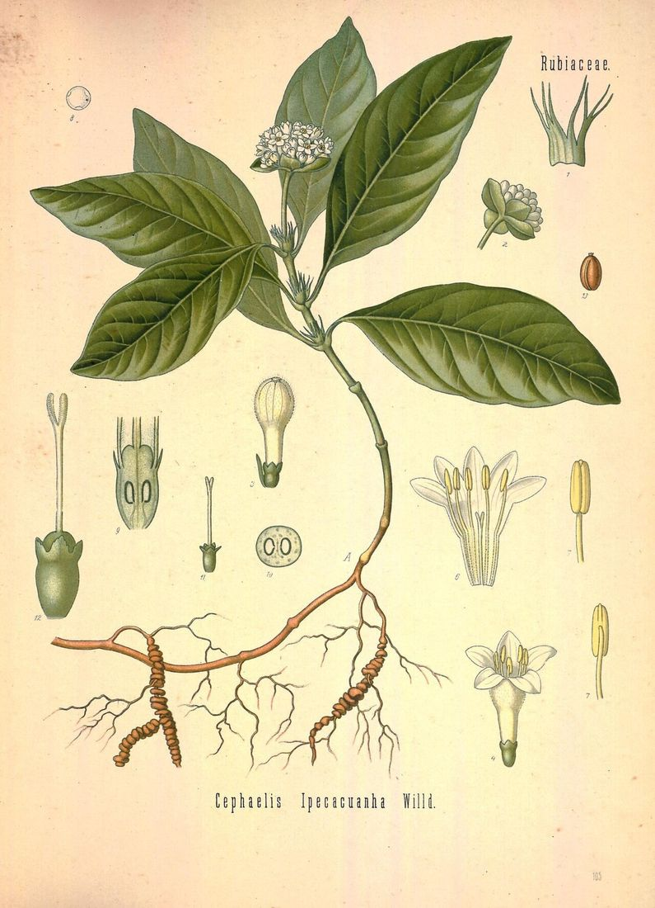

Home / My journey
My journey
A scientist’s curiosity, a mother’s discovery
I’m Vinita Pandey — a homeopath in Wimbledon and online, and a former research scientist at University College London.

My background
Healing is a deeply personal process
I am passionate about wellbeing and healing. Homeopathy has helped my own family, my friends and many of the patients I have seen to feel well again.
Each of us is on some kind of journey, and most of us carry patches that need to be gently touched and healed — emotional or physical, the result of a trauma, an accident or a grief. Living with that kind of suffering can show itself as illness, or as anxiety or anger.
We are born to be strong and healthy, but circumstances can push us into a groove of illness. Together, through carefully chosen homeopathic remedies, we work to unravel and release what is holding you there.
Vinita
The story so far
How I came to homeopathy
- The research years
Seven years at UCL
I spent seven years in scientific research at University College London, latterly as a postdoctoral research fellow in the Department of Physiology, studying the mechanisms underlying AIDS dementia. Evidence and careful observation were my daily work.
- 2003
A crying baby and four small pills
When my son Pranav was two months old, he cried for hours with colic. My sister-in-law Shraddha offered a homeopathic remedy. I was sceptical about giving pills to a baby — but within minutes he was settled and asleep. It was my first experience of homeopathy as a parent, and it wasn’t the last: over the following years it helped my family through teething, hay fever and many childhood ailments.
- The turning point
“Just a coincidence”?
Guided by Mr Poddar, a family friend in Delhi to whom I owe endless gratitude, I watched remedy after remedy help my son. One night of hourly vomiting eased after a single dose of Ipecac — a substance that, in larger amounts, causes vomiting. ‘Like cures like.’ My brother, Dr Sudhanshu Bankata, a medical doctor, called it coincidence. The scientist in me wanted to understand.
- Retraining
A career break, and a new path
Convinced there was something worth exploring, I took a career break from research and embarked on advanced training in homeopathy, becoming a licentiate (LCHE) and a registered member of the Society of Homeopaths (RSHom).
- 2010 – today
The Health Zone Clinic, Wimbledon
Since 2010 I have practised as a homeopathic consultant at The Health Zone Clinic on Wimbledon Hill Road — and, increasingly, online for clients across the UK and abroad.
A family of healers
My brother’s work: LexMedix
My brother, Dr Sudhanshu Bankata, is a radiologist and hospital leader with more than fifteen years of experience running imaging centres and hospitals in India. Through LexMedix he builds AI tools that take the paperwork out of healthcare, so doctors can spend more time thinking about their patients. Two of them help patients directly:
- Treatbank gathers scattered prescriptions and reports into one clear, structured health history.
- Pathbank reads uploaded lab reports, highlights values that need attention and charts trends over time.
Other LexMedix tools support radiologists (Radbank), hospitals (Fullcurebank) and legal teams (Legalbank). A qualified professional always reviews the results.
Visit lexmedix.inQualifications & experience
Training you can trust
Doctorate in scientific research
The “Dr” in Vinita’s name reflects her PhD — she is not a medical doctor.
Postdoctoral Research Fellow, UCL
Department of Physiology · research into the mechanisms underlying AIDS dementia (2001–2006).
Licentiate in homeopathy
Advanced professional training in classical homeopathy.
Registered with the Society of Homeopaths
Bound by the Society’s code of ethics and practice, with professional insurance.
How I work
What you can expect from me
Warmth
A calm, non-judgemental space where you can say anything.
Time
Unhurried appointments, so nothing important is missed.
Rigour
A scientist’s attention to detail in every case I take.
Honesty
Clear about what homeopathy can and can’t do — and when to see a doctor.
The greatest wealth is health.
Sometimes life takes us through rough patches, but there is often a light at the end of the tunnel. I sincerely wish you a content, peaceful, happy, healthy and fruitful life.
Your first step
How about trying homeopathy?
Looking for a more holistic approach to your health, or simply want to feel restored and rebalanced? Book a free 15-minute online call.